When Life Gives You Tangerines
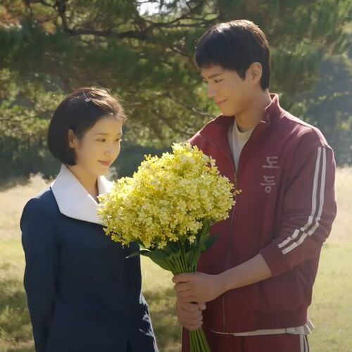
Set on Jeju Island over several decades, it tells the heartfelt, bittersweet story of Ae-sun, a rebellious girl who dreams of being a poet, and Gwan-sik, the quiet, steadfast boy who loves her. The series follows them from the 1950s to the 2000s, portraying their endurance through personal, economic, and societal hardships with a focus on enduring love and memory.
Weak Hero Class

A gritty Korean action-drama about Yeon Si-eun, a top-ranked, physically weak student who uses intelligence, psychology, andhousehold tools to fight back against brutal school bullies.
Extraordinary Attorney Woo
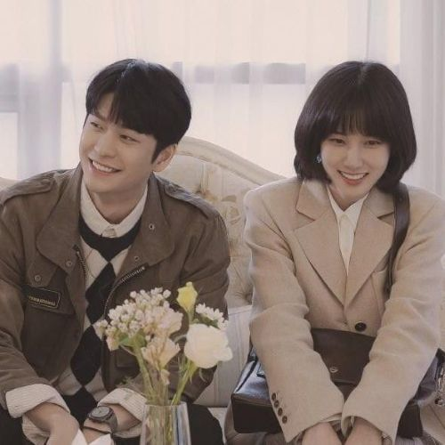
A heartfelt South Korean legal drama following Woo Young-woo, a brilliant rookie attorney on the autism spectrum with a photographic memory and high IQ. She navigates a top law firm, overcoming prejudice and social challenges through her unique perspective.
Rookie Historian Goo Hae Ryung
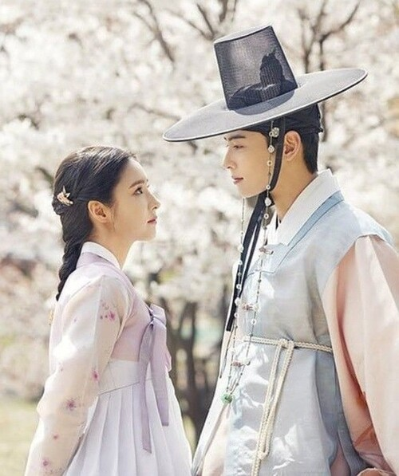
The story follows Goo Hae-ryung, a free-spirited noblewoman who defies social expectations to become one of the royal court's first female historians. In a society governed by strict Confucian values, she fights for the right to record history independently while navigating palace conspiracies and professional discrimination.
Hobbies!
Crochet
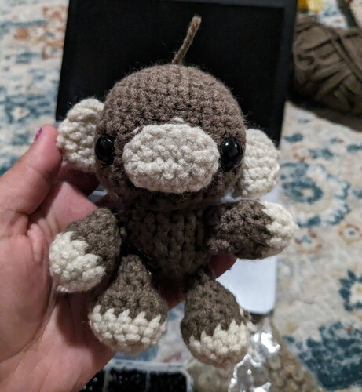
I enjoy crocheting and creating various items like beanies, bags, blankets, and plushies. It's a relaxing and fulfilling hobby that lets me be creative.
Reading
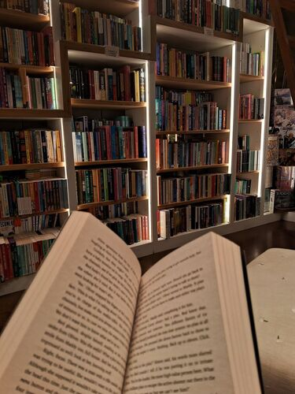
I love reading! Personally, I prefer fiction books since they allow me to immerse myself in different worlds. It's a great way to expand my knowledge and imagination while relaxing.
Bracelet Making
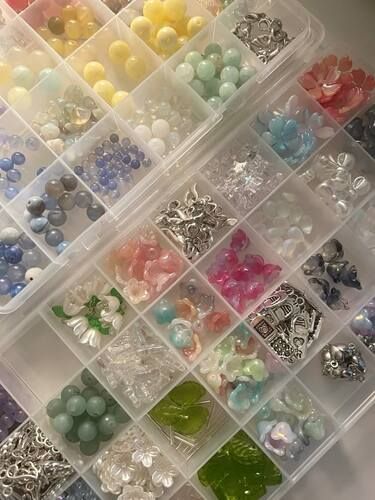
I recently got into bracelet making and have bought lots of beads and charms to work with. I prefer the summer-camp beaded bracelets over the clay ones. I also like combining my beaded keychains with a little crochet trinket. (I recently made a jellyfish keychain with beads!)
Favorite Music Artists!
K-Pop Groups
SEVENTEEN
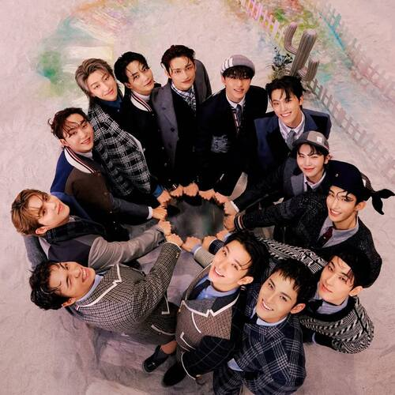
SEVENTEEN is a highly acclaimed 13-member South Korean boy band. They are known as "self-producing" idols, heavily involved in composing, writing, and choreography.
Accomplishments: They were the first K-pop group to headline the Pyramid Stage at the Glastonbury Festival. Their 2023 releases FML and Seventeenth Heaven broke sales records, with FML selling over 5 million copies in its debut week.
P1Harmony
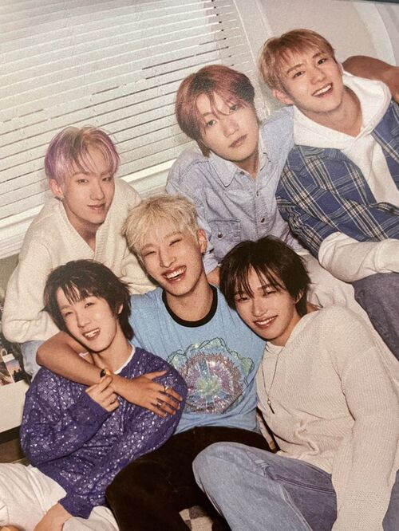
P1Harmony is known for their high-energy performances, hip-hop-infused dance-pop, and active member involvement in songwriting. They are known for their cinematic storytelling and themes of social consciousness, self-belief, and fighting against conformity.
Accomplishments: P1Harmony made their debut on the Billboard 200 at No. 51 with their 6th mini-album and reached No. 35 on the Artist 100. Their 2025 mini-album Duh! recorded over 440,000 copies in its first week. The 2026 release UNIQUE shattered this, selling over 450,347 copies on its first day.
ATEEZ
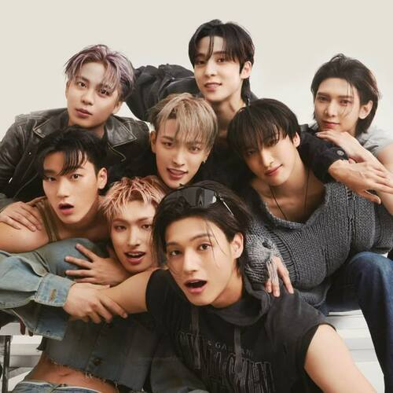
ATEEZ is known for their intense performances, cinematic pirate-themed lore, and powerful EDM/hip-hop sound. They are lauded as "4th generation leaders" with significant global popularity and consistent chart-topping hits. They maintain an extensive storyline involving a dystopian world, often using QR codes and hidden messages in their content.
Accomplishments: ATEEZ was the first 4th gen group to perform at Coachella. They have had multiple #1 spots on Billboard 200. ATEEZ are frequent winners on "Immortal Songs".
BOYNEXTDOOR
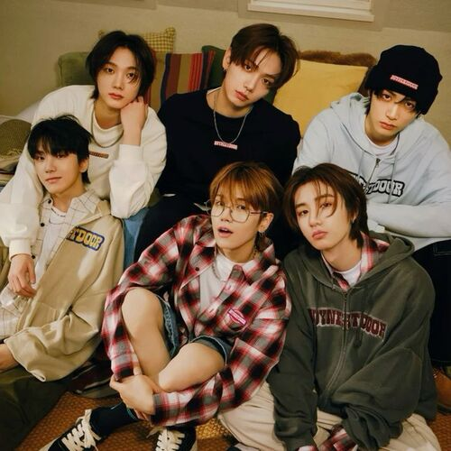
BOYNEXTDOOR is known for a "boy next door" image, producing youthful, easy-listening music focusing on everyday life and relatable emotions. The members are heavily involved in the creative process; actively composing and writing their own music.
Accomplishments: Achieved over 1 million copies in initial sales for consecutive releases, including 19.99, No Genre, and The Action, showcasing tenfold growth from their debut. Earned their first No. 1 on Billboard's World Albums chart and top 40 on the Billboard 200 with 19.99.
ENHYPEN
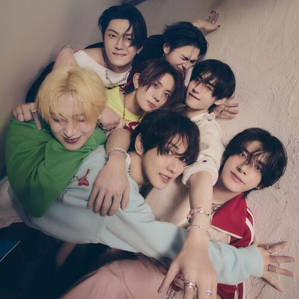
ENHYPEN is a prominent South Korean boy band formed through the 2020 survival competition show I-LAND. They are known as "Performance Kings" and "4th Generation Hot Icons," ENHYPEN is celebrated for dynamic, highly synchronized choreography and powerful stage presence.
Accomplishments: ENHYPEN became the fastest K-pop boy group of the 4th generation to achieve "million-seller" status with their first full album, Dimension: Dilemma. They have held major sold-out world tours and are the first in their generation to headline solo concerts at the Tokyo Dome.
Stray Kids
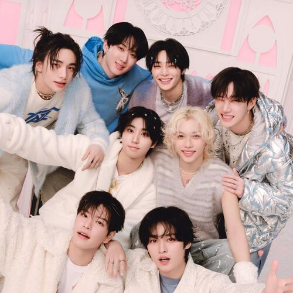
Stray Kids is an 8-member South Korean boy band under JYP Entertainment, known for being a "self-produced" group. Their music blends hip-hop, electronic, and intense pop, establishing a distinct "noise music" genre. Known for high-energy performances, intense rap sections, and lyrics that often focus on finding one's identity and defying expectations.
Accomplishments: Stray Kids achieved eight consecutive #1 debuts on the Billboard 200. As of 2026, they have won multiple grand prizes, including Album of the Year (2022, 2025), Stage of the Year (2023), and Top Artist awards.
All (H)ours
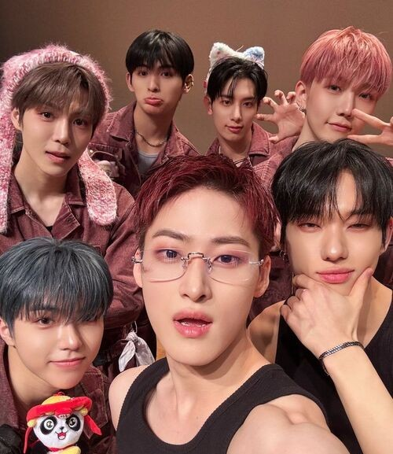
All (H)ours is recognized for their high-energy performances and "dark" or "intense" concepts. They are described as a "dynamic" group, rapidly gaining attention in the K-pop scene with a unique, aggressive, and musical style.
Accomplishments: All (H)ours has achieved over 75.788+ sold copies of their VCF album.
XLOV
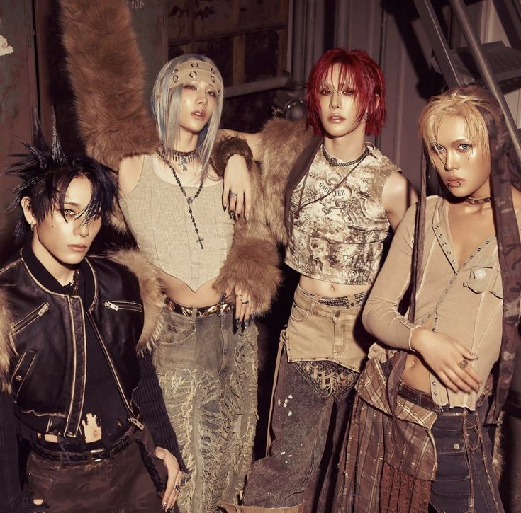
XLOV is known for their "genderless" or "gender-free" concept, they challenge traditional K-pop norms through androgynous styling—such as skirts and makeup—and a unique,, self-produced sound.
Sold out their first-anniversary fan concert in 60 seconds and saw success in Japanese and Philippine performances.
Mix of Genres
Lana Del Rey
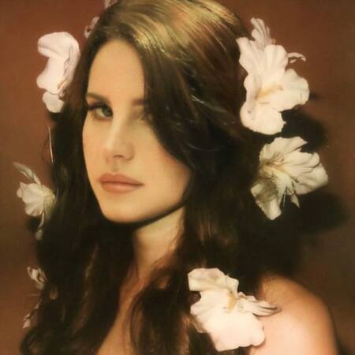
Lana Del Rey is an American singer-songwriter known for her cinematic and nostalgic style. Her music often features dreamy, romantic themes and a distinctive vocal delivery. She has released several successful albums, including "Born to Die" and "Honeymoon".
yung kai
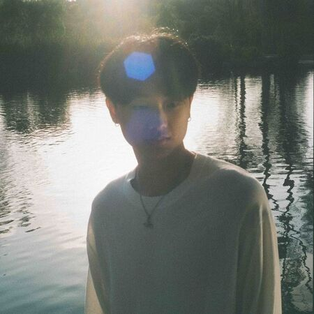
yung kai is best known for his 2024 viral hit "Blue," which amassed over one billion streams and topped charts globally. He gained popularity for producing bedroom-pop songs that evoke nostalgia, often creating melodies inspired by romantic dramas.
Fujii Kaze
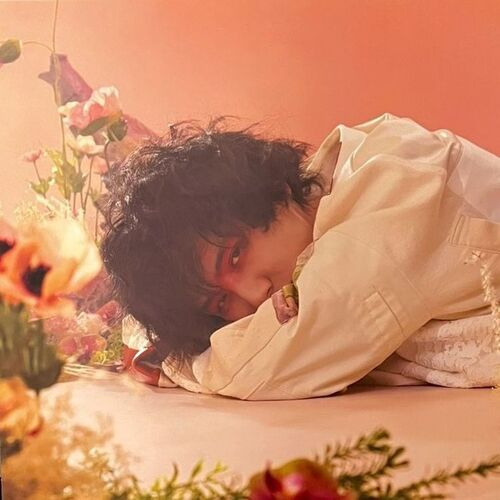
Fujii Kaze is a celebrated Japanese singer-songwriter and pianist known for blending J-pop with R&B, jazz, and funk. Rising to fame via YouTube covers, his music often explores themes of peace, self-acceptance, and spirituality with a distinct, soulful voice. He is widely recognized for hits like "Shinunoga E-Wa" and "Kirari".
asumuh
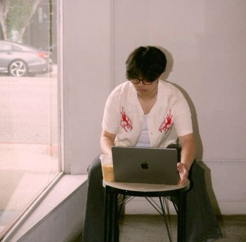
asumuh is a rising figure in the indie, bedroom pop, and R&B scenes, known for a DIY approach where he often self-produces, writes, and engineers his own music. His music is characterized by dreamy, atmospheric textures and intimate melodies, blending pop structures with R&B emotionality.
N'SYNC
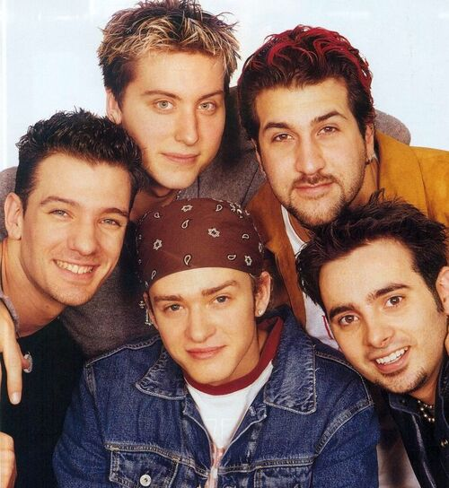
N'SYNC is an American boy band formed in 1995. They are known for their harmonious vocals and energetic performances. The band has released several successful albums, including "NSYNC" and "Celebrity".
Grupo Frontera
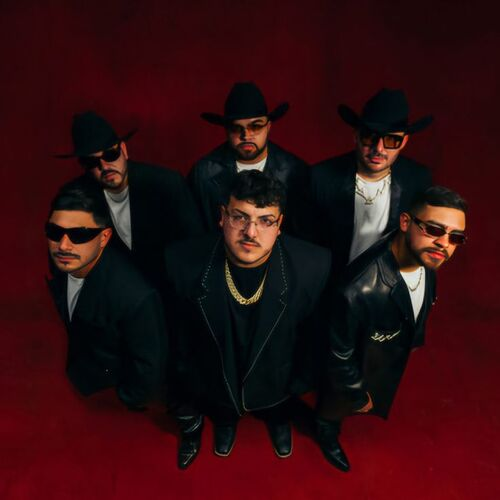
American Regional Mexican band from the Rio Grande Valley in Texas. They gained global fame with their signature norteño-cumbia sound, largely driven by their viral 2022 cover of "No Se Va". The six-member band is known for hits like "Un x100to" with Bad Bunny, blending traditional instruments with modern urbano styles.
Arctic Monkeys
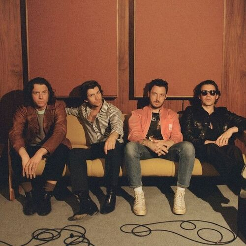
Arctic Monkeys is an English rock band formed in Sheffield in 2002. They are known for their energetic live performances and distinctive sound, blending indie rock with elements of garage rock and post-punk. The band has released several successful albums, including "Favourite Worst Nightmare" and "AM".